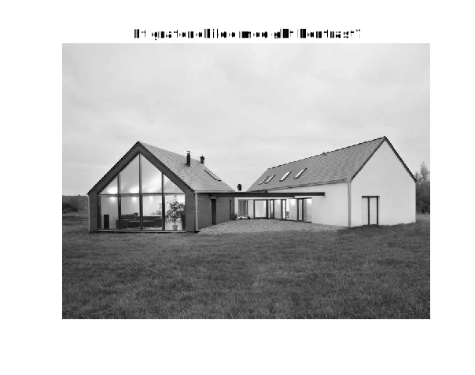
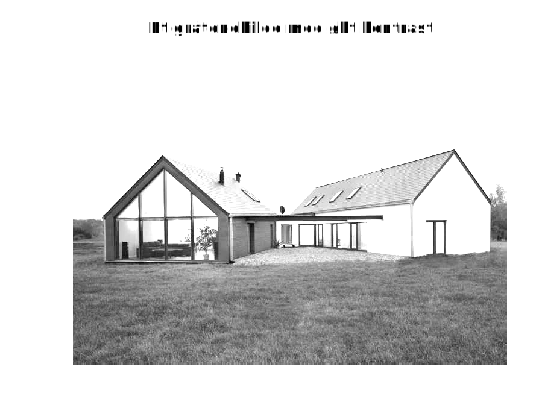

Installasjon
Nedlastning til egen PC
Programmering
Grunnleggende
Bildebehandling
Mye av semantikken i Matlab bygger også på at man jobber med matriser. Bilder er i bunn og grunn matriser - hvilket som gjør Matlab ganske naturlig egnet til å jobbe med bilder i.
Et program i Matlab har filendingen .m, og kjøres i kommandovinduet ("Command Window") ved å skrive
<navn på programmet ditt>
I alle Matlab-program er det viktig å huske et semikolon (;) i slutten av hver linje som du ikke ønsker å se verdien til. Det kan fort bli mye utskrift, spesielt ved store matriser. Er man uheldig og glemmer et semikolon, kan man avslutte utskriften ved å trykke Ctrl+C.
Programmet under demonsterer aritmetiske operasjoner, samt potens siden den skiller seg nokså ut fra de nevnte språkene.
a = -2;
b = 3;
% Addisjon:
a+b
% Subtraksjon
a-b
% Multiplikasjon
a*b
% Divisjon
a/b
% Opphøying
a^b
For å lage en tom cell, brukes krøllparantes:
cell1 = {}
Man kan utvide cell1 ved å spesifisere på hvilken plass et nytt element skal settes inn. Husk at Matlab begynner indekseringen fra 1, og bruker krøllparantes!
cell1{1} = 10; % Nå har liste kun ett element - nemlig 10
cell1{2} = 12; % Elementet 12 er nå plassert bak 10
For å lage en cell arrays som inneholder gitte elementer, brukes krøllparantes rundt elementene separert med komma:
a = 1
b = @sum % alpha-tegnet sørger for at b er en funksjonspeker til den innebygde funksjonen sum
c = 'hei'
cell2 = {a,b,c}
Når man skal hente ut elementer fra en cell array, er det viktig å huske at første element ligger på 1-te plass (i motsetning til Python der første element ligger på 0-te plass). For å hente ut et element fra en cell array, skriver vi først navnet til variabelen knyttet til array-et, og deretter krøllparantes med et tall inni som forteller fra hvilken plass programmet skal hente elementet fra.
cell1{1} % viser 10 i kommandovinduet
cell2{3} % viser 'hei' i kommandovinduet
For-løkker:
Hensikten bak en for-løkke er å utføre en kodesnutt et bestemt antall ganger.
For-løkker er kanskje én av de viktigste redskapene som kommer til å bli brukt i emnet. Derfor, er det viktig å ha god kjennskap til hvordan den kan brukes og spesielt indekseringen!
Konstruksjonen av en for-løkke er:
for <variabel> = <startverdi>:<steg>:<sluttverdi>
% Kode som skal utføres
end
Det som er viktig å huske på, er end. Den brukes også for å markere slutten av if-tester og funksjonsdefinisjoner. Det er også mulig å droppe å spesifisere steg hvis man ønsker at det skal være lik 1. Syntaksten blir da
for <variabel> = <startverdi>:<sluttverdi>
% Kode som skal utføres
end
While-løkker:
Det hender også at man ikke vet på forhånd hvor mange ganger en kodesnutt skal utføres av programmet. Dette kan f.eks være ved fjerning av piksler som vi ikke ønsker i bildet og søk etter noe i bildet.
En while-løkke er konstruert slik:
while <en betingelse er evaluert til True>
% kodesnutt som skal utføres
end
En betingelse kan være en sjekk på om ett tall er større enn en gitt verdi, om en variabel har endret seg osv.
En matrise konstrueres radvis, og inni klammeparanteser. En rad er definert som en rekke av verdier sperarert av mellomrom. For å indikere slutt av en rad, brukes semikolon. Et eksempel på konstruksjon av en 3 x 2 - matrise:
matrise1 = [1 2 3; 4 5 6];
som ser ut slik i kommandovinduet:
matrise1 =
1 2 3
4 5 6
Merk at for at matrisen skal være veldefinert, må radene være like lange (altså bestå av like mange verdier).
Programmet under viser grunnleggende operasjoner man kan gjøre med en matrise:
A = [1 2 3; 4 5 6];
a = 3;
% Addér hvert element i A med a
A + a
% Subtrahér hvert element i A med a
A - a
% Multiplisér hvert element i A med a
A.*a
% Del hvert element i A på a
A./a
% Opphøy hvert element i A med a
A.^a
% Transponér A (dvs, gjøre om radene i A til kolonner)
A.'
B = [10 11;12 13;14 15];
% Matrisemultiplikasjon
A*B
img = imread('houses.png')
I emnet kommer vi til å jobbe hovedsakelig med gråtonebilder. Det hender at de bildene som gis, er farge eller leses av som om de har farge. For å være på den sikre siden, kan man inkludere dette i programmet før man jobber videre med det:
img = imread(<filnavn til ditt bilde>)
if ndims(img) == 3 % det innleste bildet er et fargebilde
img = rgb2gray(img) % konvertér til gråtonebilde
end
If-testen sjekker om antall dimensjoner i det innleste bildet er 3. Fargebilder er 3-dimensjonale, mens gråtonebilder er 2-dimensjonale. Vet programmet at bildet har 3 dimensjoner, så betyr det altså at bildet er et fargebilde.
Det er også veldig viktig å passe på at bildet programmet jobber med, er av riktig datatype. De innleste bildene er av typen uint8, som betyr at verdiene er alltids heltall. Det kan gi store numeriske feilberegninger siden verdiene blir rundet til heltall mellom 0 og 255. Derfor er det en god vane i å konvertere det til f.eks double før man utfører matematiske operasjoner på bildet:
img = double(img)
Det finnes ulike funksjoner i Matlab for fremvising av bilde. En funksjon som kan brukes er imshow:
imshowc(img,[])
De tomme klammeparantesene forteller at Matlabs fremvising av verdier er begrenset av innbildets minste og største verdi. Etter noen operasjoner på bildet (og gitt at bildet er konvertert til double), kan det hende den har erdier større enn 255 (som et typisk bilde har). For at resultatet av operasjonen skal vises tydelig frem, kan en bruke
imshow(img,[0 255])
for at Matlab framviser bildet som om det har verdier mellom 0 og 255.
Noen ganger kan det hende at det framviste bildet er liten i forhold til vinduet. Da kan man bruke et ekstra argument, InitialMagnification slik:
imshow(img,[0 255],'InitialMagnification','fit')
Da vil bildet skaleres opp i forhold til vinduets størrelse.
Programmet under demonstrer det som har blitt beskrevet til nå:
img = imread('houses.png');
if ndims(img) == 3
img = rgb2gray(img);
end
img = double(img);
img_constrast = img.*1.5;
imshow(img_constrast,[],'InitialMagnification','fit')
title('Et gråtonebilde med økt kontrast?')
figure() % For å lage et nytt vindu
imshow(img_constrast,[0 255],'InitialMagnification','fit')
title('Et gråtonebilde med økt kontrast')
som gir disse bildene:
Figure 1: Bilde av det første vinduet.

Figure 2: Bilde av det andre vinduet.

Dette er også viktig å bruke figure() hvis man ikke ønsker at det nye bildet som fremvises overlapper bildet som tidligere har blitt sendt inn til imshow.
Bildebehandling er et fag der eksperimentering er viktig, og da er det nyttig å vise fram og presentere resultatene programmet har fått.
img = imread('houses.png');
if ndims(img) == 3
img = rgb2gray(img);
end
img = double(img);
% Øke kontrast
img_increased_contrast = img*1.5;
% Gjøre bildet lysere
img_brighter = img + 100;
figure()
subplot(2,1,1) % subplot deler et vindu i flere delplott.
imshow(img_increased_contrast,[0 255],'InitialMagnification','fit')
title('Økt kontrast')
subplot(2,1,2)
imshow(img_brighter,[0 255],'InitialMagnification','fit')
title('Økt lyshet')
God programmering!